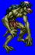
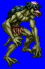
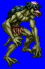
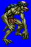

Height: 60 cm - 1 meter Weight: 100 lbs.
Habitat: River, pond, swamp Origin: China
Meaning: ???
A well-known type of Japanese ghost. It is believed that the legends of this type of ghost were transmitted from China. It is amphibious and the height of a child. It is covered in scales and has a pointed bill, little hair, and webbed feet. It is strong both on land and in water. It can rip the liver straight from a man's body after pulling him underwater.